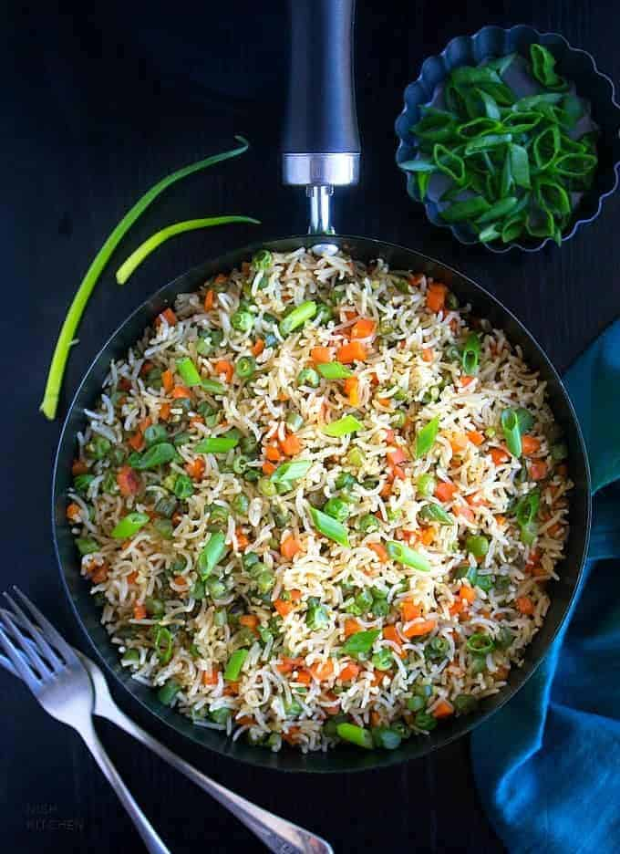

Indian Vegetable Rice

Description
A lovely vegetable recipe full of flavor which can be eaten by itself.
Delicious if eaten with plain yogurt. Create your own variation with different
vegetables and spices.
Ingredients
- 2 tablespoons vegetable oil
- 1 onion, thinly sliced
- ½ teaspoon ground cumin
- 1 cup Basmati rice
- 2 cups water
- ¾ teaspoon salt
- ½ teaspoon garam masala
- ¾ cup frozen mixed vegetables
Steps
- In a large pan heat oil over medium heat and saute onions and cumin until
onions are tender, but not browned.
- Rinse the rice several times and drain well. Add the rice to the pan with
the onions and pour in the 2 cups of water. Stir in salt, garam masala and
vegetables. Cover the pan and increase the heat to high.
- Bring the mixture to a boil and then reduce the heat to low, keeping
the rice covered at all times.
- After cooking for about 10 minutes, gently stir the rice to distribute
the spices evenly. Cook 25 to 30 minutes, or until all of the water has
evaporated and the rice is tender.
Credits
https://www.allrecipes.com/